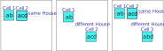

[GNPX v5.1]
Subset Exclusion Subset Exclusion_ALS
SubsetExclusionの解析アルゴリズムでは、 House、 ALS、 RCC、 を用います。
SubsetExclusion の仕組み
-
盤面上の2～3セルに着目します。これらを Stem とします(Stemは、DeathBloosomからの借用です)。
セルは、同じHouseに属するケースと、属していないケースがあります。
属している場合は、Aligned Pair/Triple exclusion アルゴリズムになります。
プログラムで解く場合には、ほとんど差はないので、区別せず”Subset Exclusion”とします。

-
盤面上に、Stemと同じHouseに属する ”要素が2数字のセル" に着目し、これを”Leaf”とする。
右図のように、Stemが同じHouseに属さないケースでも、Stemのそれぞれのセルと同じHouseに属するとする。
Leafは、Stemと連結した状態です。
この状態では、Stemは [b,d] となることはない。Leafの候補がなくなる。

-
Stemの候補数字の組み合わせ リスト を生成します。上図の場合では、6組あります。
候補数字リスト : [a,a],[a,c],[a,d], [b,a],[b,c],[b,d]
- Stemのセルが同じHouseに属している場合は、同じ数字の組はリストから除外できる(上図では [a,a])。
- Leafによりリストから除外される。例の場合では、Leafの数字組により[b,d]はリストから除外できる。
この処理を、盤面内にあるすべてのLeafについて適用する。
- Stemの候補数字リストの評価により、ある数字の可能性がなくなると、Stemの候補数字から否定的に確定する。
-
3セルのStemでも状況は同様です。
3セルStemに対して2数字Leafの場合には、Leafの2数字を含むパターンの全てがリストから除外できる。
例えば、Leafの数字が[a,b]のとき、リスト中の[a,b,x],[x,a,b],[a,x,b]が除外できる。 同じことですが、Leafが成立しなくなるリスト中の候補は除外できます。
プログラムコード的な表現では、(StemとLeafの)RCCとLeafの要素が一致するとき、Stemの候補数字の組み合わせリストから除外できる。

-
ALSもLEAFになります[SubsetExclusion_ALS]。StemとALS間のRCCが、リストの候補を除外します。
-
（まとめ）SubsetExclusionは、次の方法で拡張できる。
- StemはSubsetでも、SubsetExclusionは成立する。
- Subset(Stem)-ALS(Leaf)間にもRCCは定義できる。RCCにより、リストの候補を除外できる。
- LeafとなるALSは、互いに重なりがあっても成立する
SubsetExclusion サンプル
SubsetExclusion、SubsetExclusio_ALSの例です(同じ局面）。
3番目のサンプルの、左上にオレンジの小丸を表示したセルは、ALSの重なりのある個所です。
 SubsetExclusion
SubsetExclusion
Stem: r14c6 #1679
Leaf: Cell r6c6 #17
Cell r2c6 #19
 SubsetExclusion_with_ALS
SubsetExclusion_with_ALS
Stem: r1c7 r3c57 #3569
Leaf: Cell r3c9 #56
ALS r579c7 #3456 RCC#35
 SubsetExclusion_with_ALS
SubsetExclusion_with_ALS
Sem: r7c1 r9c3 #2457
Leaf: Cell r7c3 #45
ALS r7c39 #245 RCC#24
Overlap : r7c3